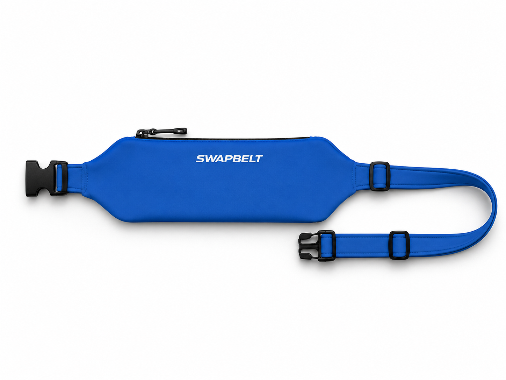
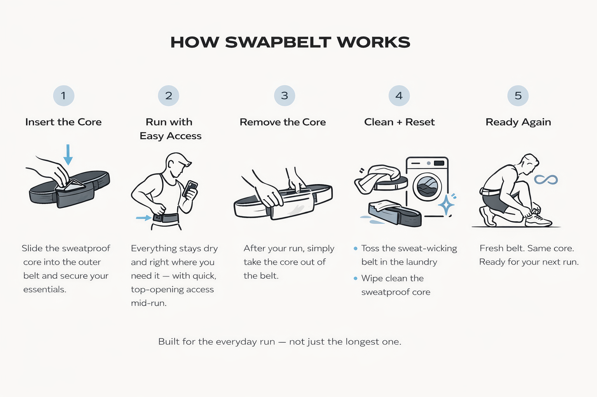
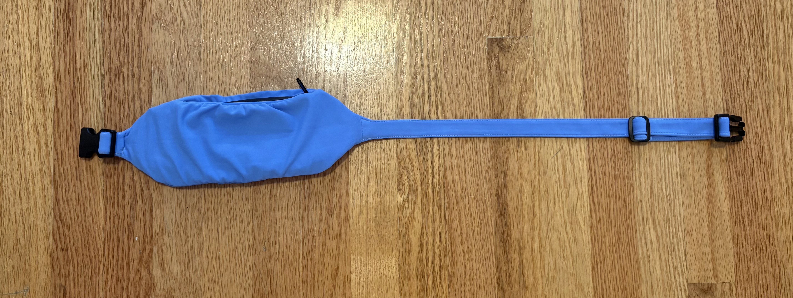
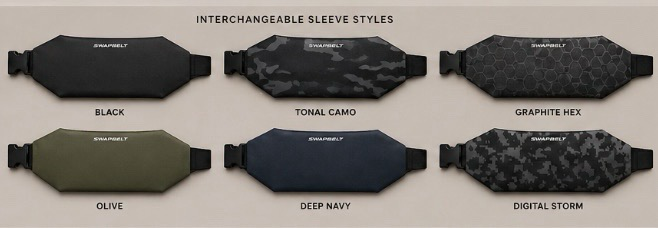

Protect Essentials
The removable waterproof core keeps your phone, keys, cards, and nutrition separate from the sweat-exposed sleeve.
In development · Ready Every Run™
Protect what you carry. Refresh what you wear.
A removable sweat-protected core pairs with washable, swappable sleeves so your setup stays ready run after run.

Why SwapBelt
Most running gear combines sweat management and storage into a single piece. SwapBelt separates them.
The removable waterproof core keeps your phone, keys, cards, and nutrition separate from the sweat-exposed sleeve.
Use one sleeve, or keep multiple styles in rotation so your carry setup works with more runs and more outfits.
Wipe the core, wash the sleeve, and reassemble quickly. Less maintenance friction before the next run.
How it works
The current prototype uses a top-entry pouch insertion and snap attachment system. The sleeve concept has been validated through testing; the next focus is the final RF-welded TPU pouch.
Load essentials into the removable waterproof pouch.
Wear the low-profile belt while the sleeve manages comfort and sweat.
Pull the storage core out after the run.
Wipe the core and wash or swap the sleeve.
Reassemble in seconds for the next run.


Product development
The modular concept, top-entry insertion, snap attachment, sleeve shape, and run security have been validated. The main remaining work is improving the TPU pouch construction so it holds shape better and feels more premium.
Modular concept validated
Top-entry pouch insertion validated
Snap attachment and run security validated
RF-welded TPU pouch development
Production prototype preparation
Future sleeve styles
SwapBelt is designed as a rotation system. It works with a single sleeve, but becomes more useful over time as runners add colors, patterns, and seasonal options around the same waterproof core.
Get style and launch updates
Early access list
Join for prototype updates, launch timing, and early preorder access. You will also get the beehiiv welcome email after confirming your subscription.
FAQ
Not yet. The product is in prototype development, with the final pouch construction currently being refined.
SwapBelt separates protected storage from the sweat-management layer, creating a running belt system that is easier to live with over repeated use.
You will get product updates, launch timing, and first notice when preorders open.
That is the long-term plan: one waterproof core with multiple washable sleeve colors and patterns.